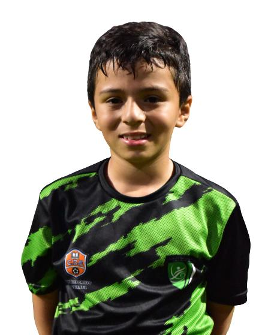
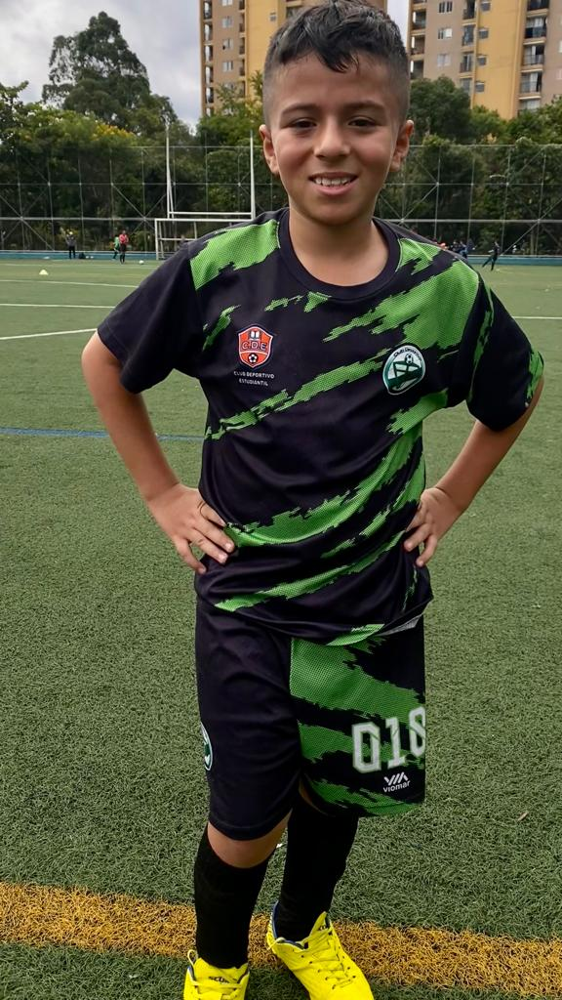

"Del Vientre a la Cancha": El Apasionante Viaje de Samuel
Desde sus primeros días en este mundo, Samuel Cardona Piedrahita ya mostraba su inquebrantable pasión por el fútbol. Nació un 16 de febrero de 2014, y su historia de amor con el balón comenzó antes incluso de dar su primer aliento. Como si en el vientre hubiera anticipado la emoción de las patadas y cabeceos que vendrían, dejó claro que su destino estaría en la cancha.
A las 12:04 de la madrugada, Samuel llegó al mundo, y desde entonces su entusiasmo por el fútbol no ha hecho más que crecer. Sus primeras patadas al balón resonaron en la escuela de fútbol Comfama, donde sus ojos se iluminaron con la magia del juego. Cada movimiento, cada contacto con el balón, le recordaba su pasión interior por el deporte.
La historia continuó en la escuela de fútbol CAMVI, donde, a pesar de desempeñarse como arquero, Samuel no podía negar su deseo de hacer goles. Sin embargo, el destino tenía otros planes, y un día memorable marcó un giro en su trayectoria. En un enfrentamiento con la escuela "Talento Paisa", una derrota no fue en vano. Aunque el marcador no estuvo a su favor, el corazón de Samuel latía en sintonía con la forma de juego de "Talento Paisa", y así nació una nueva pasión. Hoy, Samuel es conocido por su versatilidad en el campo. Se destaca en la defensa, trazando cierres impecables que desafían a los adversarios. Su fuerza y su capacidad para adaptarse a diferentes posiciones lo convierten en un activo valioso para su equipo. Aunque ha sido visto como delantero, su talento trasciende los roles convencionales. Incluso en tiros libres, Samuel demuestra una habilidad innata, cobrando con precisión y pasión.
Cada vez que el balón rueda, Samuel demuestra que su amor por el fútbol es un fuego ardiente. Aunque el gol de tiro libre soñado todavía está por llegar, la certeza de que ese momento está en el horizonte solo lo impulsa a esforzarse más.
"Del Vientre a la Cancha" es más que un nombre, es un testamento de la pasión
inquebrantable de Samuel. Su viaje desde los primeros movimientos en el vientre
hasta los emocionantes enfrentamientos en la cancha es una historia de amor por el
fútbol, de perseverancia y de un niño que ha dejado su huella en el campo.
Únete a nosotros mientras celebramos el viaje emocionante de Samuel a través del fútbol,
un deporte que le enseña sobre trabajo en equipo, perseverancia y la alegría de dar lo
mejor de sí mismo en cada partido.
¡Ven y siente la pasión de "Del Vientre a la Cancha", una historia que inspira a todos
a perseguir sus sueños con valentía y determinación!